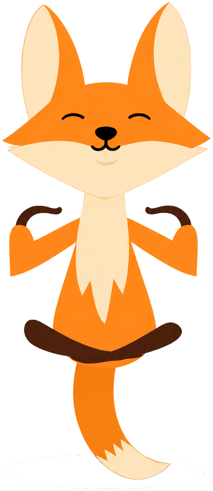

Лисичка рядом
Помощник в образе персонажа: ребёнок может обратиться за поддержкой спокойно и без давления — в привычной форме диалога.
С какой задачей пришли
Школьникам бывает сложно попросить помощь вслух — стыдно, страшно или непонятно, с чего начать. Взрослым важно дать безопасный канал, где ребёнок не чувствует себя под допросом.
Нужен был формат, который снижает тревогу и помогает дойти до сути обращения.
Какое решение было реализовано
Создали цифрового помощника с персонажем «Лисичка» — спокойным собеседником, который ведёт по шагам.
- Диалог вместо сухой анкеты — ребёнку проще начать разговор.
- Подсказки и мягкие формулировки без давления.
- Понятные шаги: что случилось, что беспокоит, нужна ли помощь взрослых.
- Визуальный образ, который запоминается и не пугает.
Что получил пользователь
- Ребёнок может попросить помощь в комфортной для себя форме.
- Школа получает инструмент бережного общения, а не очередную «форму ради формы».
- Обращение проще довести до сути — без смущения и лишних барьеров.
- Взрослые видят, что поддержка доступна не только «на словах».
Галерея экранов

Привет. Я рядом. Расскажи, что тебя беспокоит — можно коротко.
Сложно было сказать учителю…
Спасибо, что написал. Давай разберёмся по шагам.
Что тебе сейчас важнее?
Поговорить
Попросить помощь
Похожая задача?
Если вам нужен помощник для общения с аудиторией — в школе, сервисе или проекте — расскажите о задаче в коротком подборе.
Хочу похожее решение